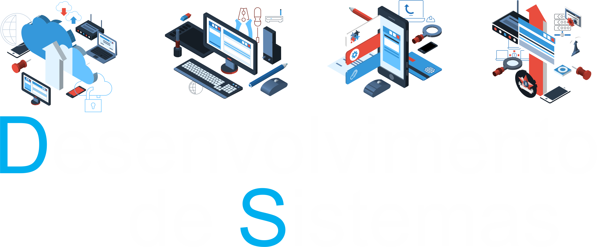
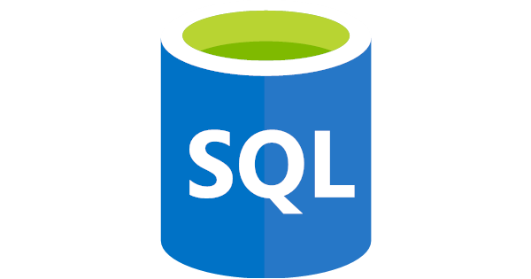

Sobre o Curso
- O curso tem como objetivo capacitar o aluno para:
- Desenvolver e operar sistemas, aplicações e interfaces gráficas
- Montar e realizar manutenção em estruturas de banco de dados
- Codificar programas e Projetar, implantar e customizar sistemas de aplicações
- Selecionar programas de aplicação e sistemas operacionais a partir da avaliação das necessidades do usuário
- Agir de forma a minimizar os riscos inerentes à segurança de informações, relacionando e aplicando soluções adequadas
- Identificar oportunidades e tendências no mundo digital
de Aula
de Prática
reconhecido pelo MEC
Grade Curricular
- Módulo I
- Linguagem, Trabalho e Tecnologia
- Programação e Algoritmos
- Banco de Dados I
- Análise e Projeto de Sistemas
- Design Digital
- Programação Web I
- Fundamentos da Informática
- Técnicas de Programação
Total
400h/semestre
- Módulo II
- Inglês Instrumental
- Desenvolvimento de Sistemas
- Banco de Dados II
- Internet e Protocolos
- Programação de Aplicativos Mobile I
- Programação Web II
- Planejamento do Trabalho de Conclusão de Curso
em Desenvolvimento de Sistemas
Total
400h/semestre
- Módulo III
- Segurança de Sistemas de Informação
- Banco de Dados III
- Sistemas Embarcados
- Programação de Aplicativos Mobile II
- Programação Web III
- Qualidade e Teste de Software
- Ética e Cidadania Organizacional
- Desenvolvimento do Trabalho de Conclusão de Curso (TCC)
Total
400h/semestre
Mercado de Trabalho
Segundo o que informa a Associação Brasileira das Empresas de Software (ABES) em parceria com International Data Corporation Pesquisa de Mercado e Consultoria Ltda (IDC), em 2016 haverá um crescimento em 3% no mercado de Tecnologia da Informação no Brasil.
Outras Associações e Instituições também discursam sobre o constante crescimento da área da Tecnologia da Informação (T.I.), como, por exemplo, a Associação Brasileira das Empresas de Tecnologia da Informação e Comunicação (BRASSCOM), que em uma entrevista realizada pelo Jornal da Globo, foi divulgado pelo presidente da empresa, Sérgio Sgobbi, que em 2015 a área da Tecnologia da Informação (T.I.) registrou uma alta de mais de 8% em oportunidades de emprego e a tendência para os demais anos é crescer gradativamente.
Além disso, em apresentação ocorrida durante o seminário "Governo e o setor de TI - Garantia de Inovação, Produtividade e Segurança”, em Brasília, a expectativa era de que no segundo semestre de 2015, o setor de TI tivesse um crescimento nos investimentos da ordem de 7% a 7,5%, incluindo hardware, software e serviços.
Essas informações são baseadas em pesquisa feita pelo International Data Corporation (IDC) no mercado de TI do Brasil. Esta mesma pesquisa aponta que a Indústria Brasileira de TI permanece em 7º lugar no ranking mundial e em 1° lugar no Ranking da América Latina em 2015, com um investimento de US$ 2,2 trilhões (crescimento em 9,2% em relação a 2014), sendo que US$ 14,3 bilhões (crescimento de 8,2%) somente no setor Serviços de T.I. e US$ 12,3 bilhões (crescimento em 30,2%) no setor de softwares.
A pesquisa apresentada também trouxe um mapa do investimento em TI no país, no qual a região Sudeste foi a que mais teve participação total nos investimentos em hardware, software e serviços, com 60,67%.
Associação Brasileira das Empresas de Software. Disponível em: http://www.abessoftware.com.br/.
CENTRO PAULA SOUZA. Missão, Visão, Objetivos e Diretrizes. Disponível em: http://www.cps.sp.gov.br/. Acesso em: 25 Mai. 2025.
Tecnologias



Contato
São Paulo, Brasil
(11) 1111-1111
ds@cps.sp.gov.br